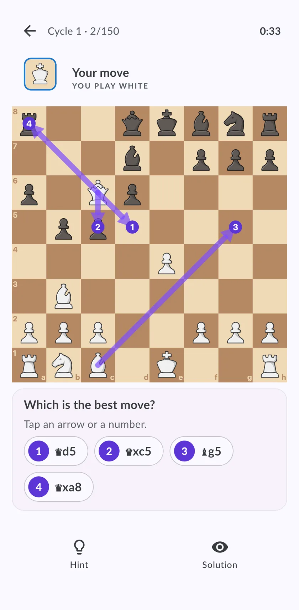
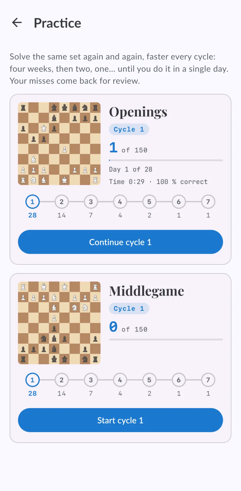

El método del pájaro carpintero en ajedrez: qué es, cómo hacerlo y una app que lleva la cuenta
Resolver el mismo set de posiciones una y otra vez, cada vez más rápido, hasta ver las respuestas de un vistazo. Ese es todo el método. Lo difícil es cumplir el calendario, y eso es justo lo que Chess Coach hace por ti.

Qué es el método del pájaro carpintero
El método viene del libro The Woodpecker Method, de Axel Smith y Hans Tikkanen. La idea es sencilla: no mejoras viendo táctica resolviendo miles de problemas nuevos una sola vez, sino resolviendo el mismo set muchas veces, hasta que los patrones dejan de necesitar cálculo.
El libro se organiza en un set de posiciones y una serie de ciclos. En cada ciclo resuelves el set entero, y cada ciclo tiene que hacerse en menos tiempo que el anterior.
Los siete ciclos
Este es el calendario que sigue Chess Coach. El tiempo de cada ciclo se reduce más o menos a la mitad, hasta que los últimos caben en un solo día.
| Ciclo | Tiempo para resolver el set entero |
|---|---|
| 1 | 28 días |
| 2 | 14 días |
| 3 | 7 días |
| 4 | 4 días |
| 5 | 2 días |
| 6 | 1 día |
| 7 | 1 día |
Cómo hacerlo
- Elige un set y no lo cambies. Cambiar de posiciones a mitad de camino anula el método: la gracia es volver a ver las mismas.
- Resuelve todas las posiciones del ciclo. Decide la jugada y después comprueba. No te saltes las fáciles: la velocidad sale de ellas.
- Descansa un día entre ciclos. El descanso es parte del método, no un premio.
- Vuelve a empezar, en la mitad de tiempo. Las posiciones que fallaste son las que más atención merecen.
Cómo lo lleva Chess Coach por ti
En el Laboratorio de cálculo, Practicar es el método del pájaro carpintero con la contabilidad hecha:
- Dos sets de 150 posiciones, uno de aperturas y otro de medio juego, elegidos y comprobados con un motor.
- Cuatro flechas, una es la mejor. Cada posición muestra cuatro candidatas: la mejor, dos creíbles que pierden terreno y un error claro. Eliges una y después juegas la línea que sigue, cinco jugadas de profundidad.
- Los ciclos te los lleva la app: en qué día de qué ciclo estás, tu tiempo y cuántas resolviste.
- Los fallos vuelven. Una posición que fallaste, o que resolviste con pista, vuelve al día siguiente, y después a intervalos cada vez más largos hasta que la aciertes.

Qué es gratis
Las diez primeras posiciones de cada set son gratis, para que pruebes el método antes de decidir. Los sets completos y sus ciclos forman parte de Premium.
Preguntas
¿Funciona el método del pájaro carpintero?
¿Cuántas posiciones debe tener un set?
El método me resulta demasiado difícil. ¿Qué hago?
¿Puedo hacerlo en el móvil?
Sigue entrenando
Llévate el coach contigo
Empieza gratis en iPhone, iPad o Android. Sin anuncios, y sin suscripción para jugar, analizar o hacer el primer curso.
Inicia sesión y tus partidas, ratings y progreso te siguen al otro dispositivo.

La portada, en un iPhone. La misma app en Android y en iPad.